Overview
本ソフトはX線回折実験で得られたプロファイル(2θ-強度)を解析するために作成されました。 本ソフトの特徴は l IPAnalyzer･CSManagerとの連携 l 回折強度をシミュレーション l 標準的な物質の状態方程式を内蔵 などです。 実行環境など
必要動作条件
.Net Framework 4.0以上 本ソフトは.Net Framework 4.0で動作するように設計しています。 .Netアプリは中間コードを実行時にコンパイルしますので、Windowsのバージョンや32/64bit環境を問わず、.Netさえインストールされていれば動作します。 推奨動作条件
» メモリ: できれば >4GB位 » CPU: できれば >2GHz & >4コア ソフト内部ではマルチスレッド化した演算を多用しています。そのため、複数のコアを内蔵したCPUを用いた方が、より快適に動作すると思います。 読み込んだ画像中の強度はプログラム内部で32bit符号なし整数型に展開します。 Main Window
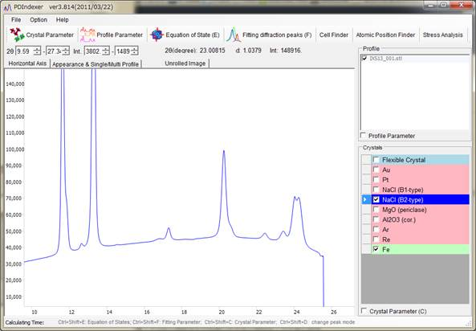 ファイル関係メニュー
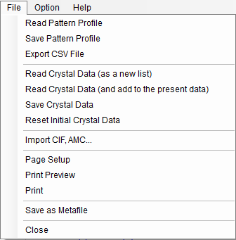 File
Read pattern profile
プロファイルデータを読み込みます。読み込み可能な形式は本ソフトの形式である｢pdi」のほか、WinPIPの出力である｢csv｣、 Fit2Dの出力である｢chi｣などが読み込めます。これ以外にも角度−強度のテキスト形式で格納されたファイルなら大体読み込めるようにしてありま す。 Save pattern profile
プロファイルデータを書き込みます。書き込み可能な形式は本ソフトの形式である｢pdi」です。 Export CSV File
プロファイルデータをカンマ区切り(角度,強度)の二次元テーブル形式で出力します。 Read Crystal Data
結晶リストファイル(拡張子 xml)を読み込みます。 Save Crystal Data
結晶リストファイル(拡張子 xml)を書き込みます。 Reset Initial Crystal Data
結晶リストを初期状態に戻します。 Import CIF, AMC ...
cif形式の構造データファイル、あるいはamc形式の構造データファイルをインポートして現在の結晶リストに加えます。 Page Setup
プリントのページ設定を行います。 Print Preview
印刷のプレビュー画面を表示します。 Print
印刷します。印刷範囲は現在の角度･強度範囲です。 Save as Metafile
現在描画しているプロファイルをメタファイル(ベクトルやフォント情報をそのまま保存する形式)で保存します。EMF(Enhanced Meta File)という形式をサポートしています。保存した「*.emf」ファイルは Power Point や Word で読み込むことができます。 Close
プログラムを終了します。 Option
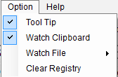 Tool
Tip
チェックすると、ボタンなどのオブジェクトにカーソルにあわせるとヒントを表示します Watch Clipboard
クリップボード監視し、プロファイルデータや結晶データが更新されると、データを読み込みソフトウェアに取り込みます。 Help
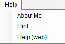 About Me
バージョン情報、著作権情報などを表示します。 Hint
使用上の注意点やヒントなどを表示します。 Help(Web)
使用マニュアル(このページ)を表示します。 タブメニュー
Horizontal Axis
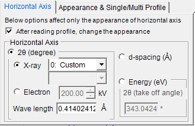 表示する軸のモードを設定します。ここで設定する情報は、表示上の設定であり、実際の横軸とは関係ありません。(実際の横軸情報は後述 の"Profile Parameter"から変更できます。)そのため異なるX線源を用いた場合でも横軸をそろえて比較することが可能です。 たとえば読み込んだプロファイルがCuのK線で取得したものであっても、MoのK線の波長で取得したように表示することができます。 2θ (degree)
横軸を角度に設定します。X線の波長を適切に設定してください。 X-ray ラジオボタン
選択すると、横軸はX線に対する散乱角になります。ドロップダウンリストから特性X線源あるいはCustomを選び波長を指定してください。 Electron ラジオボタン
選択すると、横軸は電子線に対する散乱角になります。電子線の加速電圧を指定すると相対論補正をした波長を計算します。 Energy (eV)
横軸をエネルギー(単位eV)に設定します。EDXディテクタを用いたX線回折実験の場合に相当します。EDXの取り出し角(Take off angle)を適切に設定してください。 d-spacing (Å)
横軸をd-spacing(面間隔)に設定します。 Appearance & Single/Multi Profile
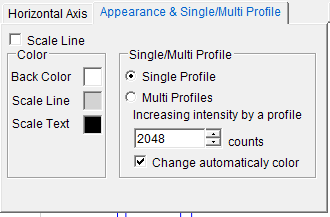 Scale Line
目もりを表示するかを選択します。 Color
表示する色を設定します。 Single/Multi Profile
プロファイルデータを単一/複数表示するかを決定します。チェックが付いているほうが現在のモードになります。 Single Profile
単一プロファイルモードです。プロファイルを読み込んだとき、あるいはクリップボード経由でIPAnalyzerから送信されてきたとき、古いプロファイルは削除され、新しいプロファイルが描画されます。 Multi Profiles
複数プロファイルモードです。新しいプロファイルは重ねて読み込まれます。 Increasing intensity by a profile
複数データを重ねるとき、データ間の強度の差を設定します。これは表示上の見易さを確保するためで、実際のデータは変更していません。 Change automatically colors
これがチェックされていると、プロファイルの描画色を自動的に変更します。 中央画面
中央ピクチャーボックス
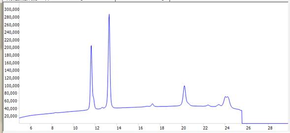 プロファイルを表示します。また後に述べるCrystalボックスで結晶が選択されている場合、回折ピークの位置に線が表示されます。 マウス操作
左ドラッグ:回折線を移動(結晶の格子定数を変更) 右ドラッグ:拡大 右クリック:縮小 また横軸･縦軸描画範囲はピクチャーボックス上部の数値を入力することで変更できます。 Profile チェックリスト
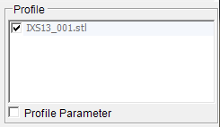 読み込んでいるプロファイルを表示/選択します。Single Profile モードのときは無効になっています。 Multi Profile モードのときは読み込んでいるプロファイルが複数表示されます。チェックされているものだけが中央のピクチャーボックスに描画されます。 より詳しいプロファイルの設定はボックス下部のProfile Parameterチェックボックスをチェックして設定します(後述)。 Crystal チェックリスト
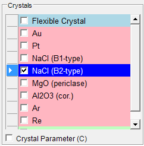 結晶のリストを表示/設定します。リストをチェックすると回折ピークの位置に回折線が表示されます。 より詳しい結晶の設定はボックス下部のCrystal Parameterチェックボックスをチェックして設定します(後述)。 ツールメニュー
Crystal Parameter
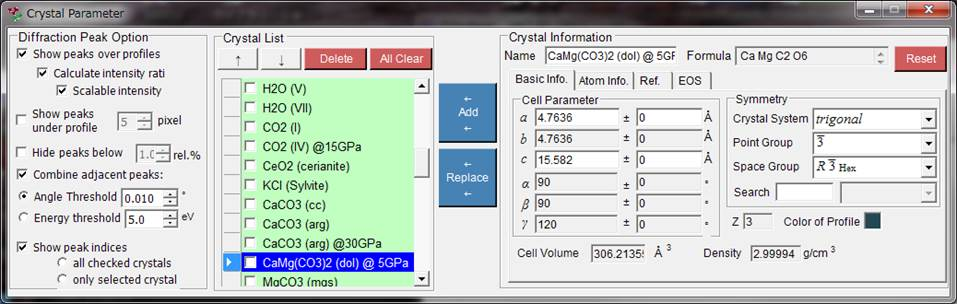 Difraction peak option †
回折線の表示に関する設定を行います。 Show peaks over profile
プロファイルデータに重ねて回折線を表示するかどうか選択します。 Calculate Intensity Ratio
構造データから回折強度(の比)を計算するかどうかを選択します。原子位置が入力されていないとチェック状態にかかわらず計算されません。 Scalable Intensity
強度比を変えずに、回折線全体をスケーリングできるかどうかを選択します。 Show peaks under profile
プロファイル下部に回折ピークを表示するかどうかを設定します。 Peak height
プロファイル下部に表示するピークの高さ(ピクセル単位)を設定します。 Combine adjacent peaks
結晶学的には非等価でも、2θが近いピーク、あるいは全く同じになるピークの強度をまとめて表示するかどうかを選択します。たとえば立方晶系では (333)と(115)面は非等価にもかかわらず全く同じd-spacingを持つため観測上は重なってしまいます。このような場合、このチェックボック スをチェックすることで強度をまとめて表示することが出来ます。 Threshold
どれくらい近いピークならまとめて表示するかを選択します。単位はオングストロームです。 Hide peak below
最強線と比べて低すぎるピークを消去するかどうかを選択します。最強線に対する比率で指定します。 Show peak indices for ...
回折線の指数を、すべてのチェックしている結晶に対して表示するか(All checked crystals)、選択している結晶のみに表示するか(only selected crystal)を選択します。 Crystal チェックリスト
これはメイン画面のProfileチェックリストと同一の情報を表示します。チェックされている結晶はメイン画面で回折線が表示されます。 上下矢印ボタン
結晶の順番を変更できます。(1-6個目はEOSのために予約されていて変更できません。) Addボタン
右の画面(後述)で設定した結晶をリストに新規に追加します。 Changeボタン
右の画面(後述)で設定した結晶を現在選択されている結晶と入れ替えます。 Deleteボタン
現在選択されている結晶をリストから削除します。 Crystal Information
結晶の細かい情報が表示されます。 詳しくはCrystal Information Helpを参照してください。 Profile Parameter
プロファイルの細かい設定を行います。 Profile チェックリスト
これはメイン画面のProfileチェックリストと同一の情報を表示します。 上下矢印ボタン
プロファイルの順番を変更できます。 Deleteボタン
選択したプロファイルを削除できます。 カラーボックス
クリックするとリストで選択しているプロファイルの描画色を変更できます。 Smoothing †
これをチェックすると選択しているプロファイルに平滑化を施します。平滑アルゴリズムはSavizky-Glayという方法で、その方法を砕いて言うと
注目しているx位置から±Point Number分のデータに対してOrder次数関数による最小2乗法フィッティングを行い、求まった関数F(x)を改めてx位置の強度値として採用するという方法です。Order=1のとき単純移動平均になります。 Back Ground
バックグラウンド減算を行います。チェックすると自動的にバックグラウンドを計算し、減算します。 Edit mode
自動で引かれたバックグラウンド曲線が不適当な場合、このモードをチェックすると、手動でバックグラウンドの制御点を変更できます。メイン画面に描かれた丸い制御点をマウスでドラッグして適当な曲線を作ってください。変更が終了したらこのモードをオフにしてください。 Search Point Number
最大でいくつまでのバックグラウンド制御点を自動検索するかを設定します。 Equation of States
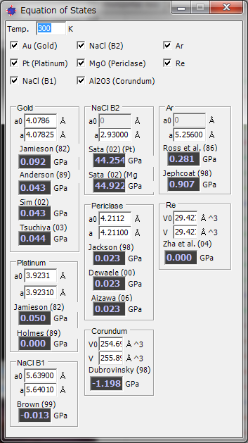 標準的な物質の状態方程式から圧力を計算するためのツールです。 画面上部のチェックボックスから圧力を求めたい物質を選択すると、画面下部にその計算結果が表示されます。 現在のところ、結晶リストの上から6つの結晶(Au, Pt, NaCl B1, NaCl B2, MgO, Al2O3)について圧力を計算できます。 直接数値を入力しても出来ますが、メイン画面で回折線を動かしたときも即座に計算結果に反映されます。 Fitting diffraction peaks
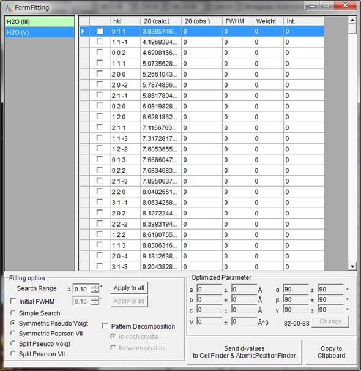 このツールはピークプロファイルを適当な関数でフィッティングし、2θからd値をもとめ、最小2乗法で格子定数を求めるという一連の作業を行います。 フィッティングを行うためには... 対象となる結晶をリストから選択しておきます。また、Multi Profileモードのときは対象となるプロファイルをリストから選択しておきます。 回折線をマウスでドラッグしてピークになるべく重なるように調節しておきます。 フィッティングを行いたい回折線の指数をチェックリストボックスから選択します。 独立な指数を何本か選んで最小2乗法が計算可能になると、画面右下に最確な格子定数が表示されます。 Changeボタンをおすと格子定数がプログラム本体の結晶に反映されます。 Fitting Option
ピークプロファイルをフィッティングする際の細かい設定が出来ます。 Simple Search
現在の計算上の回折線の位置から±Search rangeの範囲でもっとも強度の強いところをピーク位置として認識します。 Symmetric Pseudo Voigt
左右対称の擬似フォークト関数でフィッティングを行います。 Symmetric Pearson VII
左右対称のピアソン(VII)関数でフィッティングを行います。 Split Pseudo Voigt
左右非対称の擬似フォークト関数でフィッティングを行います。 Split Pearson VII
左右非対称のピアソン(VII)関数でフィッティングを行います。 Search Range
フィッティングする範囲を設定します。すなわち計算上の回折線位置から±Search Range分だけを上記関数形のフィッティングの対象とします。 Pattern Decomposition
選択された2本以上の回折線のSearch Rangeに重なり合いがあるとき、ピーク分解を行うかどうかを選択します。 in
each crystal
選択すると結晶ごとに独立にピーク分解を行います。 between crystal
選択するとすべての結晶に対してピーク分解を行います。 |